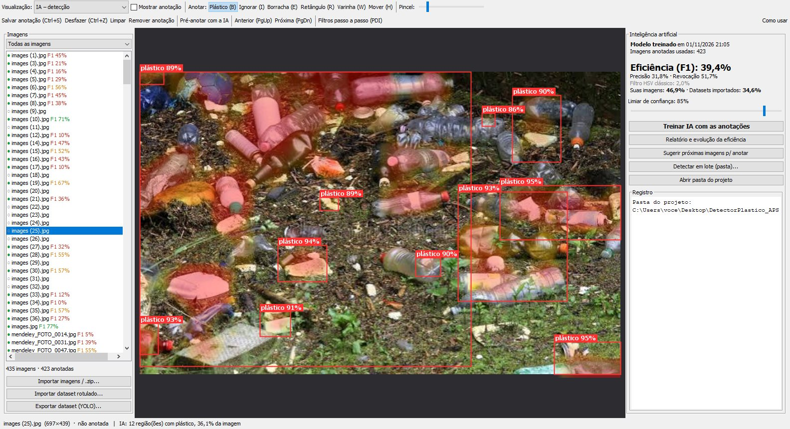
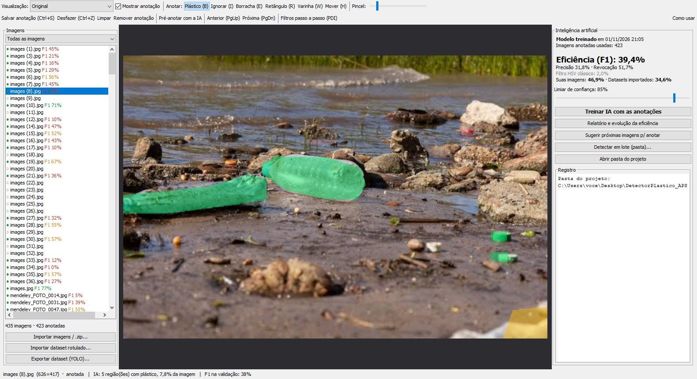
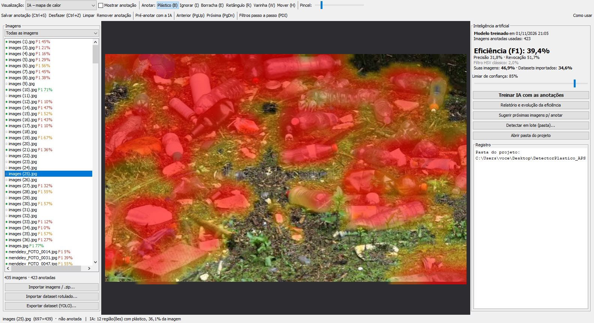
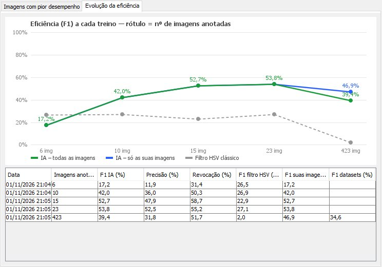
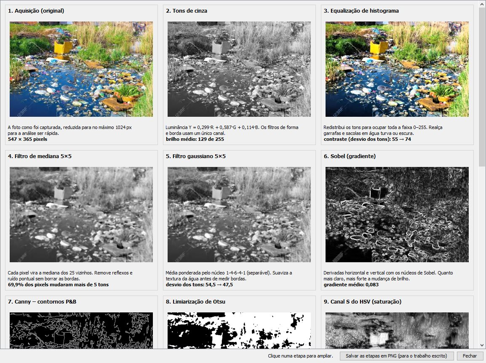

Detector de Plástico em Rios
Guia rápido: como ligar, testar e usar o sistema. Feito para quem nunca abriu o projeto.

INICIAR.bat1. Antes de começar
Você precisa de um computador com Windows 10 ou 11 e o Java instalado (versão 8 ou mais nova).
Como saber se já tenho o Java
Não precisa verificar: o INICIAR.bat verifica sozinho e, se faltar, abre o site de download.
Como instalar o Java (só se o INICIAR.bat pedir)
- Baixe o Eclipse Temurin 21 em adoptium.net: versão para Windows x64, arquivo
.msi. - Instale clicando em “Próximo”. Na tela de opções, deixe marcado “Add to PATH” e “Set JAVA_HOME”.
- Feche e abra o
INICIAR.batde novo.
INICIAR.bat de dentro do .zip, o Windows copia só esse arquivo para uma pasta temporária e o programa não acha as imagens. O próprio .bat avisa quando isso acontece.2. Ligar o programa
- Extraia o .zipBotão direito no arquivo
DetectorPlastico_APS.zip→ Extrair tudo… → Extrair. Pode ser na Área de Trabalho ou em Documentos. - Abra a pasta extraída e dê dois cliques em
INICIAR.batSe aparecer “O Windows protegeu o computador”, clique em Mais informações → Executar assim mesmo. Esse aviso aparece em todo .bat baixado pela internet ou pelo WhatsApp. - Escolha uma opção no menuDigite o número e aperte ENTER. Na primeira vez, use 2 para testar e depois 1 para abrir o programa.
==========================================================
DETECTOR DE PLASTICO EM RIOS - APS
==========================================================
[1] Abrir o programa
[2] Testar se esta tudo funcionando
[3] Treinar a IA de novo (com as anotacoes atuais)
[4] Detectar plastico em uma pasta de imagens
[5] Exportar o dataset (YOLO) para o Google Colab
[6] Ver os filtros passo a passo de uma imagem
[7] Abrir o guia "Como rodar"
[8] Assistir ao video explicativo
[0] Sair
Digite o numero e aperte ENTER: _
3. Testar se está tudo certo (opção 2)
O teste leva poucos segundos. Ele confere o Java, a memória, as pastas, o modelo da IA, a detecção, os filtros e a interface gráfica. O resultado esperado é este:
=== Teste do Detector de Plástico === [OK] Java 21 (64 bits), memória disponível para o programa: 3072 MB [OK] Pasta do projeto: ...\DetectorPlastico_APS (435 imagens, 423 anotadas) [OK] Permissão para gravar resultados [OK] Modelo da IA carregado (... com 423 imagens, eficiência F1 39,4%) [OK] Detecção funcionando (images (1).jpg: 6 região(ões) em 132 ms) [OK] Filtros de processamento de imagem funcionando (12 etapas) [OK] Interface gráfica disponível RESULTADO: TUDO OK – pode abrir o programa.
Se alguma linha mostrar [FALHOU], a linha de baixo diz o que fazer. Se não resolver, mande uma foto da tela no grupo.
4. Conhecendo a tela (opção 1)

- Visualização (topo): Original, Filtro HSV clássico, P&B contornos, IA – mapa de calor e IA – detecção.
- Anotar: Plástico (pincel), Ignorar, Borracha, Retângulo, Varinha e Mover.
- Lista de imagens: ● verde = anotada. O número “F1” é o quanto a IA acerta naquela imagem.
- Painel da IA: eficiência atual, limiar de confiança e botões de treino, relatório, sugestões e lote.
- Filtros passo a passo (PDI): as 13 etapas do processamento na imagem atual.
- Importar / Exportar (embaixo, à esquerda): imagens, datasets prontos e exportação YOLO.
5. O ciclo de uso: anotar → treinar → conferir
- AnoteEscolha uma imagem e pinte de verde o plástico com o pincel (tecla B). Para objetos inteiros, use a Varinha (W); para montes, o Retângulo (R). Salve com Ctrl+S. Se a imagem não tem plástico, salve sem pintar: isso também ensina a IA.
- TreineClique em Treinar IA com as anotações. Leva de 10 segundos a 1 minuto. No fim aparece a eficiência (F1), comparada com o filtro HSV clássico.
- ConfiraMude a visualização para IA – detecção ou IA – mapa de calor. Em Relatório e evolução você vê as imagens em que a IA mais erra e o gráfico da eficiência a cada treino.
- MelhoreUse Pré-anotar com a IA: ela pinta sozinha, você só corrige e salva. Sugerir próximas imagens mostra onde a IA tem mais dúvida.


6. Filtros passo a passo (para o trabalho escrito)
O botão Filtros passo a passo (PDI) mostra a imagem atual em 13 etapas: tons de cinza, equalização, mediana, gaussiano, Sobel, Canny, Otsu, canal S do HSV, segmentação HSV, morfologia, componentes conexos e o resultado da IA. Cada etapa vem com uma explicação e um número de resultado. O botão Salvar as etapas em PNG grava tudo em resultados/filtros_<imagem>, pronto para o capítulo de filtragem.

7. Outras opções do menu
| Opção | O que faz |
|---|---|
| 3 Treinar a IA de novo | Mesmo treino do botão da janela, pelo terminal. |
| 4 Detectar em uma pasta | Arraste a pasta de fotos para a janela preta e aperte ENTER. Em resultados/lote_… saem as fotos marcadas e um relatorio.csv (abre no Excel). |
| 5 Exportar dataset (YOLO) | Gera os dados preparados (imagens, rótulos, máscaras e data.yaml) e um .zip para treinar um YOLO no Google Colab. Veja o LEIAME.txt dentro dele. |
| 6 Filtros passo a passo | Salva as 13 etapas de uma imagem (arraste a imagem ou aperte ENTER para usar a de exemplo). |
8. Resultados atuais (para a apresentação)
| Treino | F1 nas imagens do grupo | F1 em vídeos nunca vistos |
|---|---|---|
| 6 imagens do grupo | 17,2% | – |
| 15 imagens do grupo | 52,7% | – |
| 23 imagens do grupo | 53,8% | 13,5% |
| 23 do grupo + 400 de dataset público (atual) | 46,9% | 29,8% |
| Filtro HSV clássico (sem aprendizado) | 27,1% | 4,4% |
Mais imagens anotadas fazem a IA acertar mais. Imagens de outro cenário ajudam a generalizar, mas custam um pouco no cenário original. Os detalhes e a explicação técnica estão no LEIAME.md.
9. Problemas comuns
- “O Java não está instalado neste computador”
- Instale o Temurin 21 (seção 1) e abra o
INICIAR.batde novo. - “Parece que você abriu este arquivo de dentro do .zip”
- Extraia o .zip (botão direito → Extrair tudo) e rode o .bat da pasta extraída.
- “O caminho desta pasta é longo demais para o Windows”
- Mova a pasta
DetectorPlastico_APSpara um lugar mais curto, por exemploC:\APSou a Área de Trabalho. - “O Windows protegeu o computador”
- Clique em Mais informações → Executar assim mesmo. O aviso é normal para .bat vindo da internet ou do WhatsApp.
- A janela não abre
- Use a opção 2 (teste) para ver o motivo. Em computadores com Java 32 bits, o .bat já usa menos memória automaticamente.
- A pasta está em Arquivos de Programas ou no OneDrive e dá erro ao salvar
- Mova a pasta para Documentos ou para a Área de Trabalho.
- Mudei o código-fonte. Como recompilo?
- Dê dois cliques em
compilar.bat(precisa do JDK, que já vem no Temurin).
10. O que tem na pasta
INICIAR.bat | Menu com tudo: abrir, testar, treinar, detectar, exportar. |
video/ | Vídeo explicativo narrado, com legendas (cerca de 3 minutos e meio). |
COMO_RODAR.pdf | Este guia. |
LEIAME.md | Explicação técnica completa, resultados, relação com o manual da APS e créditos. |
DetectorPlastico.jar | O programa já compilado. |
src/ | Código-fonte em Java (para o apêndice do trabalho). |
dados/ | Imagens e anotações (máscaras). |
modelos/ | IA treinada, histórico de eficiência e desempenho por imagem. |
resultados/ | Saídas: detecção em lote, filtros passo a passo, dataset YOLO. |
Detector de Plástico em Rios · APS 2026/2 · Ciência da Computação. As imagens com nome mendeley_* vêm de um dataset público sob licença CC BY 4.0 (citação no LEIAME.md).